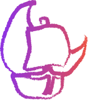

Luna
O que é a Luna
O Luna é um programa desenvolvido com o objetivo de reunir em um só lugar tudo o que o público gamer precisa:
Notícias atualizadas sobre o mundo dos jogos
Ferramentas de exploração para descobrir novas experiências
Uma área social exclusiva para conectar jogadores e encontrar parceiros de gameplay.
Nascimento da Luna
A ideia do projeto nasceu durante uma sessão de brainstorm entre os integrantes do grupo. A inspiração veio de Nathalia e Lucas, dois grandes apaixonados por jogos, que serviram também como base para a criação da persona do projeto. O nome LUNA surgiu da combinação de alguma letra dos nomes dos integrantes: "L" de Lyan, "U" de Lucas, "N" de Nathalia, e o "A" de Alves, sobrenome do integrante Vitor Alves — representando, assim, a união e colaboração de todo o grupo.
Embora o projeto tenha sido inicialmente criado com fins pedagógicos, todos os integrantes compartilham o desejo de levá-lo além da sala de aula. O grupo acredita que o Luna tem potencial para se tornar um programa real, capaz de facilitar o dia a dia dos jogadores e proporcionar novas formas de interação dentro da comunidade gamer — algo que os próprios desenvolvedores gostariam de usar em suas rotinas de jogo.